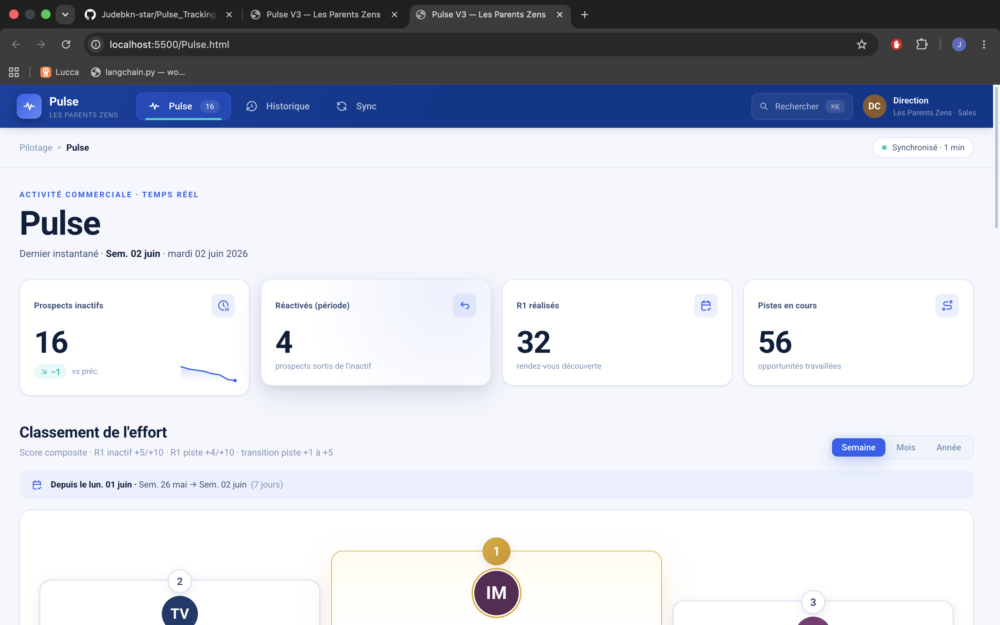
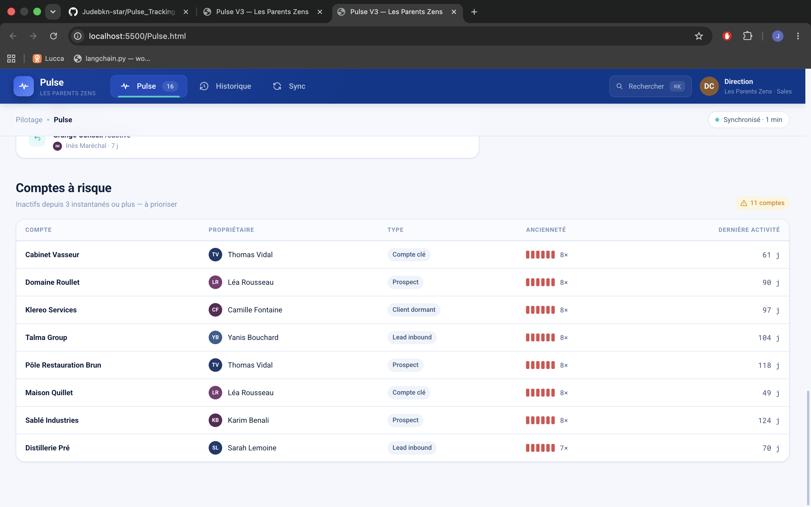
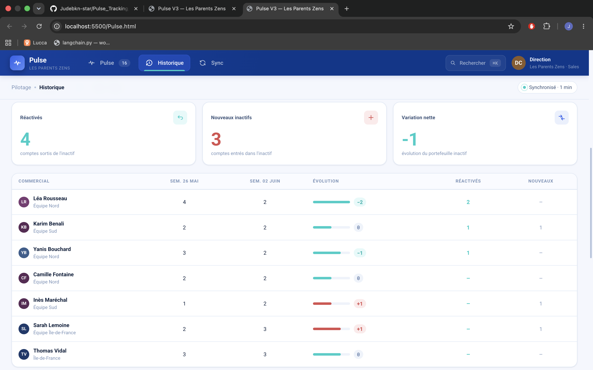
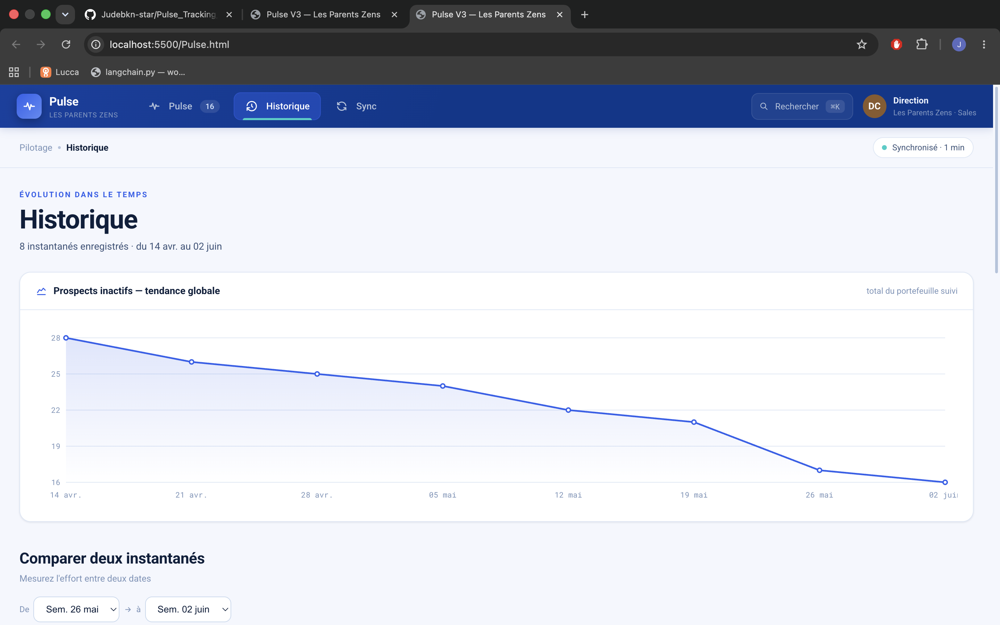
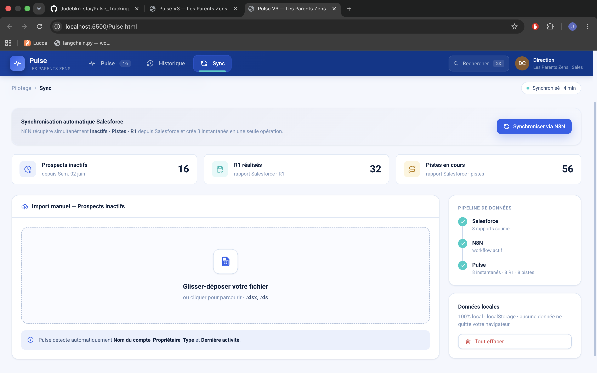

Du besoin flou à la mise en production : traduction d'un besoin métier en système de scoring défendable, unification de 3 rapports Salesforce déconnectés, pipeline automatisé et dashboard de pilotage en temps réel. Construit en alternance chez Les Parents Zens.
Leaderboard de l'effort, scoring en temps réel, taux de pression, comparaison temporelle et synchronisation Salesforce en un clic.
Interface construite avec React + Babel standalone, serveur Python local. Zéro cloud, zéro donnée hors périmètre.





Dans le cadre de mon alternance en tant que Business Analyst chez Les Parents Zens, le point de départ était un besoin difficile à formuler : est-ce que nos commerciaux travaillent vraiment leurs prospects ? Avoir un compte dans son portefeuille ne dit rien sur l'effort réel fourni.
Le vrai travail a été de challenger les hypothèses et formaliser des règles : combien vaut un R1 effectué sur un compte inactif vs programmé sur une piste ? Comment lier 3 rapports Salesforce déconnectés sur un même compte sans double-comptage ? Qu'est-ce qui se passe quand un compte disparaît du rapport sans R1 associé ?
Beaucoup de profils Sales Ops savent décrire le besoin mais dépendent d'une équipe technique pour exécuter. Ici, j'ai fait les deux : spécification métier et implémentation complète — parsing XLSX, scoring multi-rapports, interface React, automatisation N8N, API Salesforce. Testé en sandbox sur données réelles, en cours de mise en production.
Aucune donnée ne quitte le périmètre de l'entreprise. Tout est local : machine + VPS Docker privé + Salesforce.
De la logique métier à l'infrastructure data, en passant par la vision 360 du funnel et la BI — une implémentation Rev Ops complète, pas juste une spécification.
Chaque règle a été challengée : pourquoi +15 et pas +10 ? Comment éviter le double-comptage quand un R1 programmé passe à effectué ?
R1 effectué vs programmé : déduit de la date de début (passée = effectué) — pas de champ Statut exploitable dans Salesforce. Chaque action comptée une seule fois : passage programmé→effectué = scoré au changement uniquement.
Pas de Salesforce parfait, pas de rapport complet. La vraie valeur ajoutée : trouver des solutions dans les contraintes réelles du terrain.